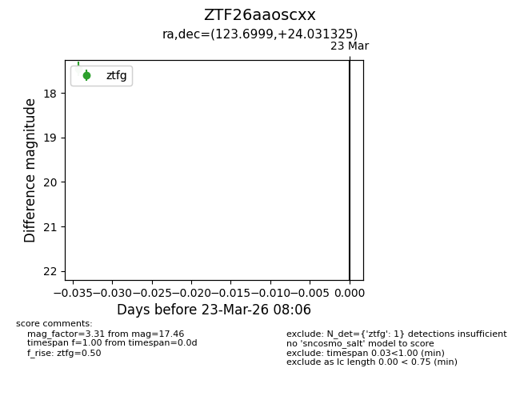
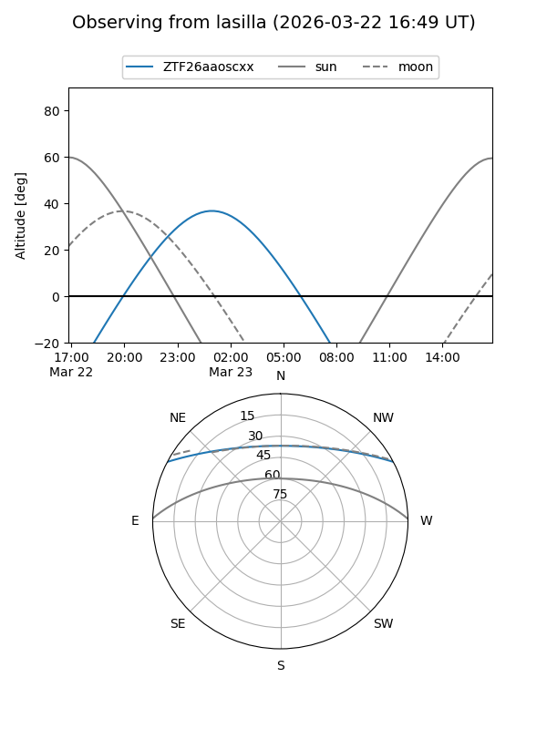
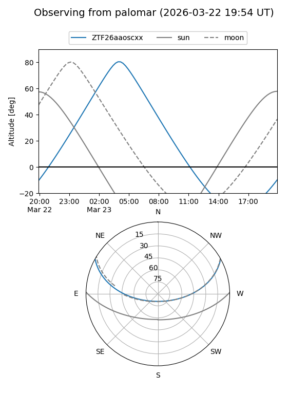

ZTF26aaoscxx
Target ZTF26aaoscxx at 2026-03-23 08:08
Aliases and brokers:
FINK: link
Lasair: link
ALeRCE: link
alt names
ZTF26aaoscxx (ztf,fink_ztf)
Coordinates:
equatorial (ra, dec) = 123.6999,+24.03132
equatorial (HMS+DMS) = 08:14:47.97,+24:01:52.77
galactic (l, b) = (198.8401,+28.35131)
Flags:
Photometry:
last ztfg=17.46
1 ztfg detections
Lightcurve

Visibility


Additional plots